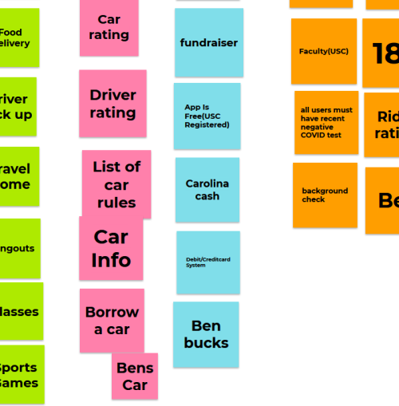

Problem Statement: College Carpool

Design an app that allows college students to connect with other college student in order to find transportation on campus and around campus.
Affinity Diagram: College Carpool
Our group imagined all different ideas to help forward our progress towards the College Carpool App.
5 Personas for College Carpool app
Personas we imagined would be a good representation of who would use our app.
Storyboard for College Carpool
We used storyboards to show off how different people we believe would use the app on a day-to-day basis.
Sketches for College Carpool
Different sketech our group created to showcase how the app would function.
Low-Fi: College Carpool
A complete lo-fi prototype of College Carpool using Proto io.